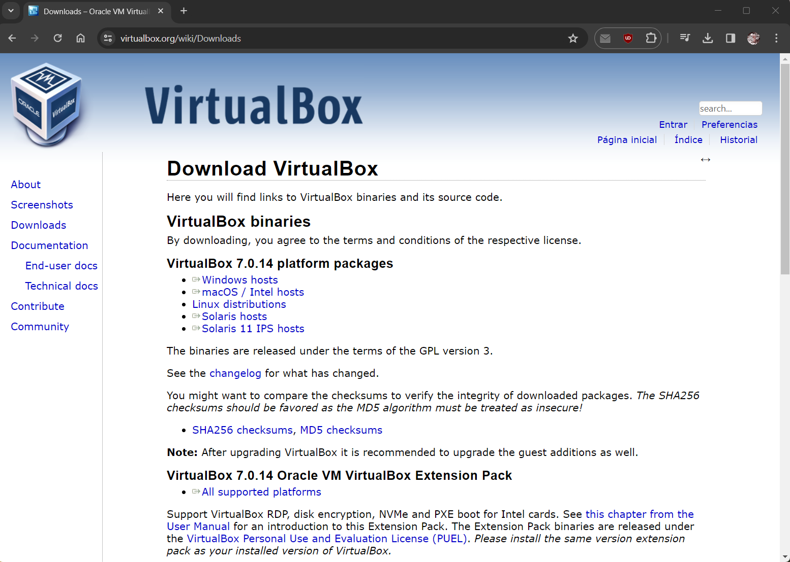
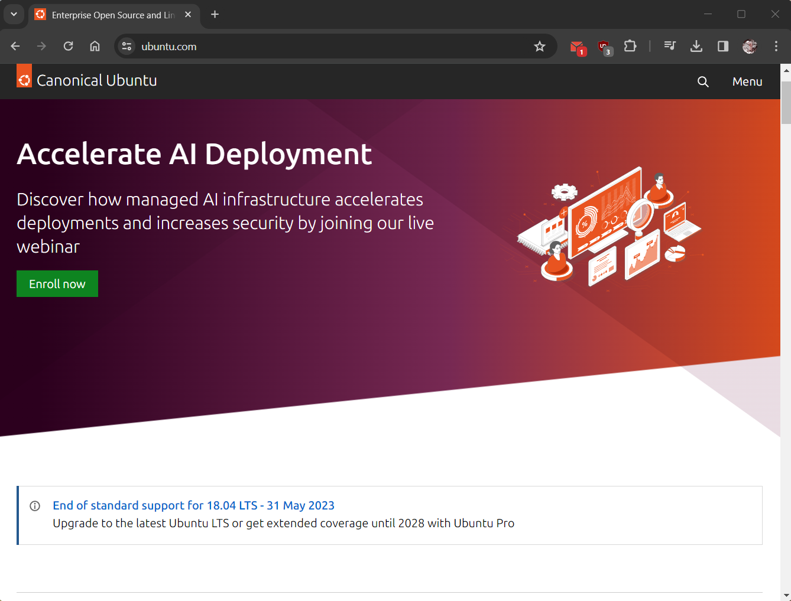
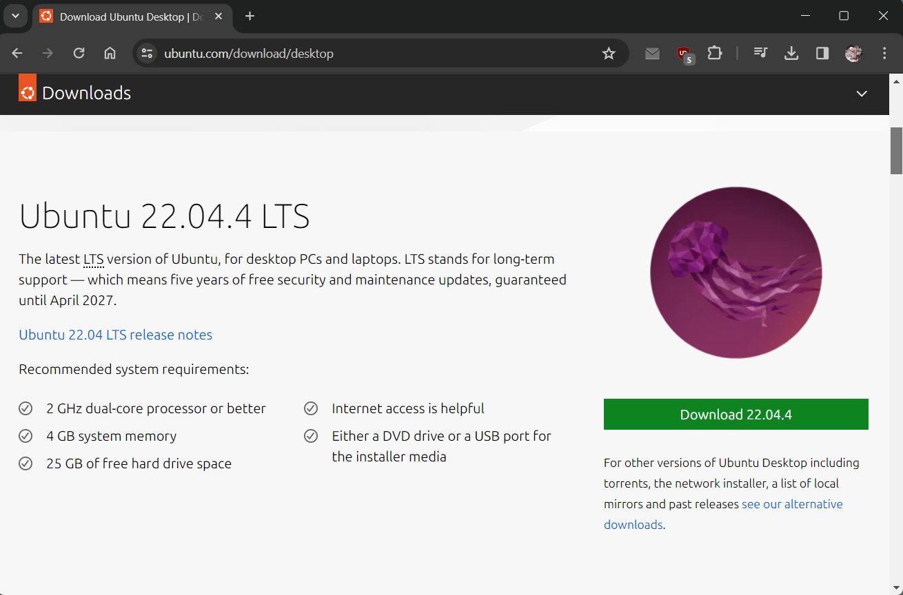
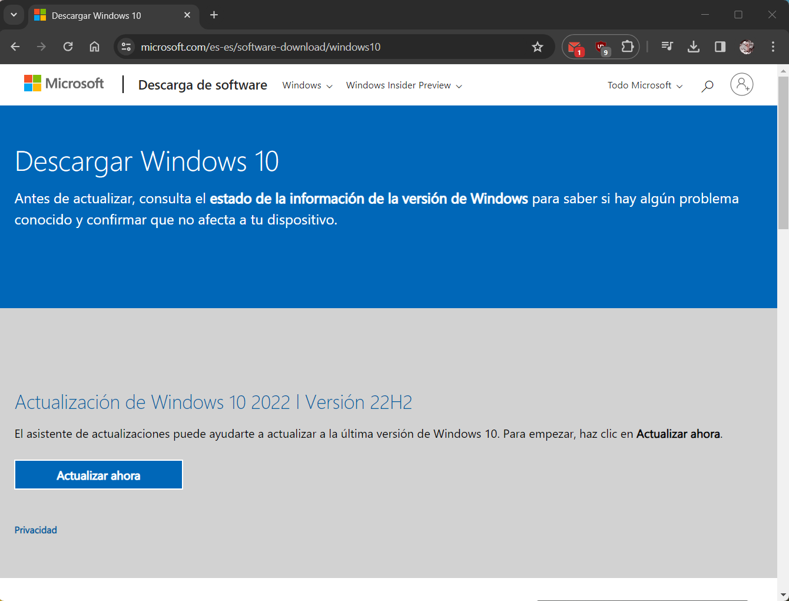
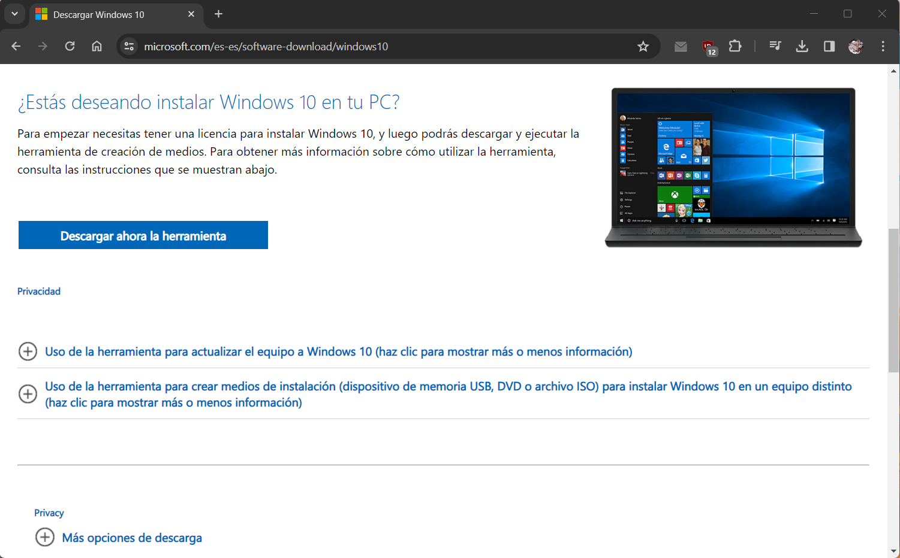
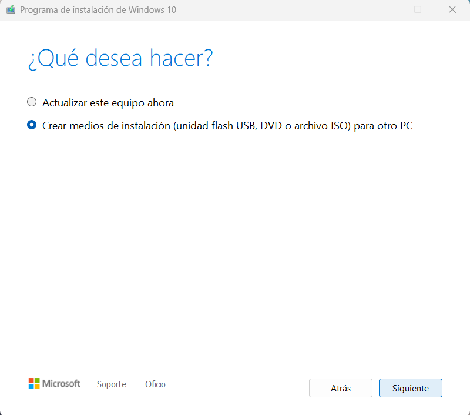
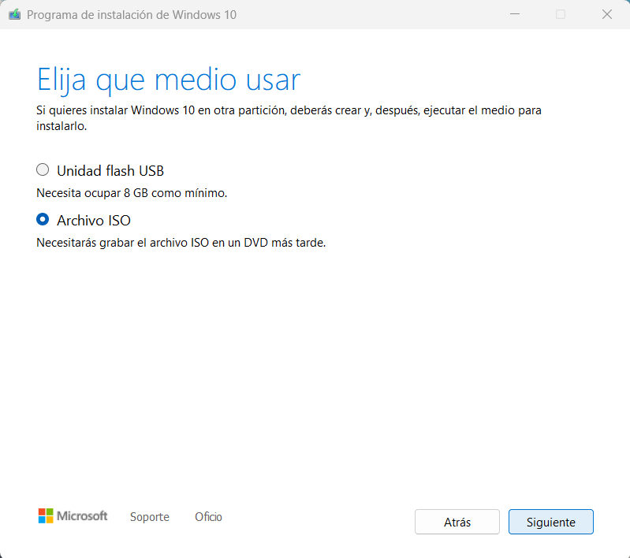

Paquetes e ISOs
Paso 1: Oracle VM VirtualBox
Para simular la existencia de dos ordenadores distintos haremos empleo de las llamadas “Máquinas Virtuales”. Una máquina virtual no es más que un software capaz de cargar en su interior otro sistema operativo haciéndole creer que es un PC de verdad.
Vamos a usar una herramienta de código abierto ampliamente conocida por su eficiencia en este ámbito: Oracle VM VirtualBox.
Para descargarla debemos ir a su página web y dirigirnos a la seción "Downloads" y elegir la opción que más se adecúe a nuestro caso. Podrás descargarlo sin problema, ya que es gratuito.
Paso 2: Ubuntu
Para el ordenador que simularemos usando Linux vamos a utilizar Ubuntu, una de las distribuciones más populares por ser muy amigable con para con el usuario.
Obtendremos la imagen .ISO desde la sección de descargas de su página web oficial, ya que se trata de software libre y gratuito. Nos descargaremos la versión más reciente (en nuestro caso la 22.04.4 a fecha 1 de Marzo de 2024). La descarga comenzará automáticamente al hacer clic en el enlace.
Paso 3: Windows
Windows no necesita presentación. Es el Sistema Operativo más popular y utilizado del mundo. Para este tutorial nos hemos decantado por el uso de Windows 10.
Conseguir la ISO de Windows 10 de manera legal y gratuita resultará ligeramente más complejo que los pasos anteriores. Deberemos ir a la página de descarga de Windows 10. Allí, deberemos descargar la herramienta de creación de medios. La descarga comenzará automáticamente al hacer clic en el enlace.
Al abrir el programa se nos dará a elegir entre actualizar nuestro equipo o crear un medio de instalación. Deberemos darle a la segunda opción.
A continuación seleccionaremos el idioma, arquitectura y edición del Sistema Operativo (español de España, Windows 10 y 64 bits en nuestro caso particular). Entonces podremos elegir entre crear una unidad Flash USB de instalación, o, la opción que nos interesa en este caso, guardar el archivo .ISO. Seleccionamos este último.
Se desplegará una ventana con el explorador de Windows para que podamos elegir en qué carpeta deseamos guardar la imagen .ISO de Windows 10.
Una vez guardada, ya tendríamos todo preparado para crear nuestras máquinas virtuales.
Paso anterior: Introducción
Retroceder